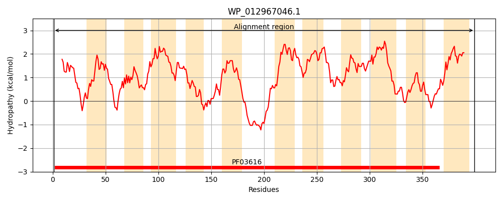
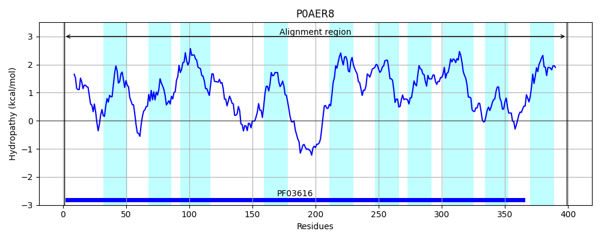
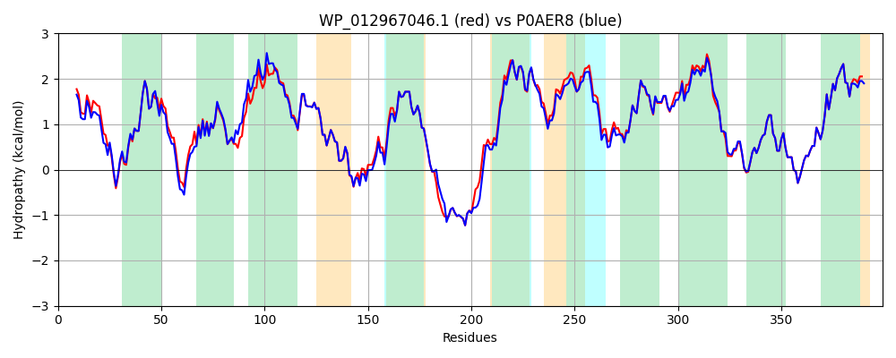

Hit Accession: P0AER8
Hit TCID: 2.A.27.1.1
Hit Description: gnl|BL_ORD_ID|8792 gnl|TC-DB|P0AER8|2.A.27.1.1 Sodium/glutamate symport carrier protein - Escherichia coli.
Mach Len: 399
e:0.000000
Query TMS Count : 11
Hit TMS Count: 10
TMS-Overlap Score: 9.850000
Predicted Substrates:CHEBI:29987;glutamate(2-), CHEBI:29989;D-glutamate(2-), CHEBI:21301;L-glutamate(1-), CHEBI:63072;L-homocysteinate
BLAST Alignment:
Score: 1780 , Bit scores: 690 bits, E-value: 0.0e+00, Alignment length: 399, Percentage identity: 88
Query: 1 MFHLDTLSTLVAATLVLLLGRKLVQTVPFLKKYTIPEPVAGGLLVALALLVLKKSMDIEIDFDMSLKDPLMLAFFATIGLNANLASLRAGGKVLGTFLIVVVGLLLLQNALGIGMATLLGLDPLMGLLAGSITLSGGHGTGAAWSKLFVERYGFANATEVAMACATFGLVLGGLIGGPVARYLVKHSSSPDGTPDDQVAPTAFEKPDVGRVITSLVLIESIALIAICLTVGKVVAQLLAGSVFELPTFVCVLFIGVILSNSLALAGLYRVFDRAVSVLGNVSLSLFLAMALMSLKLWELASLALPMIIILAVQALAMALYAVFVTYRMMGKNYDAAVLAAGHCGFGLGATPTAIANMQAITDRFGPSHMAFLVVPMVGAFFIDIVNALVIKLYLLLPIF 399
MFHLDTL+TLVAATL LLLGRKLV +V FLKKYTIPEPVAGGLLVALALLVLKKSM E++FDMSL+DPLMLAFFATIGLNAN+ASLRAGG+V+G FLIVVVGLL++QNA+GIGMA+LLGLDPLMGLLAGSITLSGGHGTGAAWSKLF+ERYGF NATEVAMACATFGLVLGGLIGGPVARYLVKHS++P+G PDDQ PTAFEKPDVGR+ITSLVLIE+IALIAICLTVGK+VAQLLAG+ FELPTFVCVLF+GVILSN L++ G YRVF+RAVSVLGNVSLSLFLAMALM LKLWELASLALPM+ IL VQ + MALYA+FVT+RMMGKNYDAAVLAAGHCGFGLGATPTAIANMQAIT+RFGPSHMAFLVVPMVGAFFIDIVNALVIKLYL+LPIF
Sbjct: 1 MFHLDTLATLVAATLTLLLGRKLVHSVSFLKKYTIPEPVAGGLLVALALLVLKKSMGWEVNFDMSLRDPLMLAFFATIGLNANIASLRAGGRVVGIFLIVVVGLLVMQNAIGIGMASLLGLDPLMGLLAGSITLSGGHGTGAAWSKLFIERYGFTNATEVAMACATFGLVLGGLIGGPVARYLVKHSTTPNGIPDDQEVPTAFEKPDVGRMITSLVLIETIALIAICLTVGKIVAQLLAGTAFELPTFVCVLFVGVILSNGLSIMGFYRVFERAVSVLGNVSLSLFLAMALMGLKLWELASLALPMLAILVVQTIFMALYAIFVTWRMMGKNYDAAVLAAGHCGFGLGATPTAIANMQAITERFGPSHMAFLVVPMVGAFFIDIVNALVIKLYLMLPIF 399 | Protein Hydropathy Plots: |
|---|
|  |  |
Pairwise Alignment-Hydropathy Plot:
|
|---|
|  |